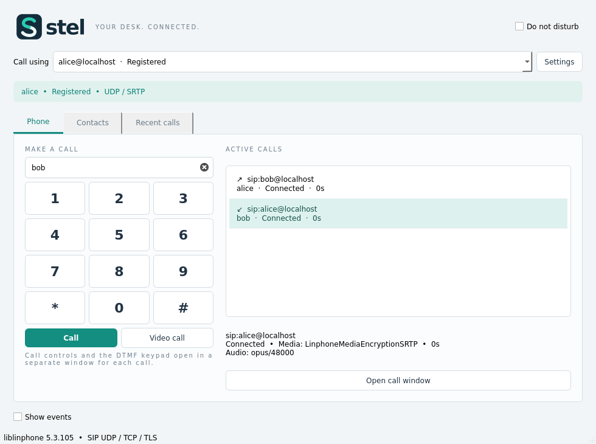

Keep your accounts together
Add and edit SIP accounts, see registration results immediately, and configure Caller ID Name and Auto Answer per account.
DESKTOP SIP SOFTPHONE · OPEN SOURCE
Multiple accounts, voice and video, and the call controls you need. A compact desktop app built with Qt and liblinphone for Linux and Windows.

Application libraries travel with the binary. See each release for the Linux baseline and Windows compatibility status.
MADE FOR EVERYDAY CALLING
Add and edit SIP accounts, see registration results immediately, and configure Caller ID Name and Auto Answer per account.
Voice and video, DTMF, hold, transfers and conferencing. Closing an active call window asks before hanging up.
SIP over UDP, TCP or TLS with optional client certificates. Choose RTP or SRTP, signalling and media addresses, and port ranges.
Built-in dummy microphone and camera, codec selection and priorities, plus local call and TLS tests. Codec availability follows the build.
INSIDE THE APP
FREE TO STUDY. FREE TO IMPROVE.
Stel's original code is GPLv3 or later. It builds on Qt, liblinphone and other open-source projects, whose own licenses — including AGPL — remain in place.
Components & licenses →Contribute to Stel →